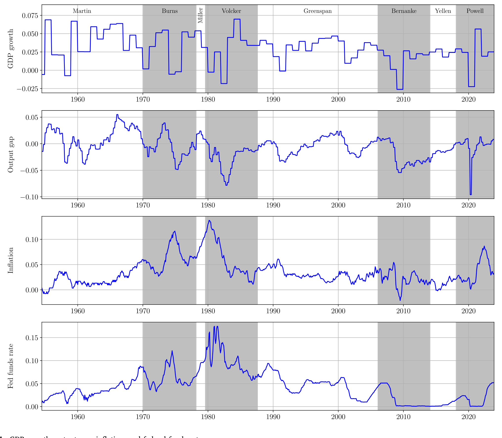
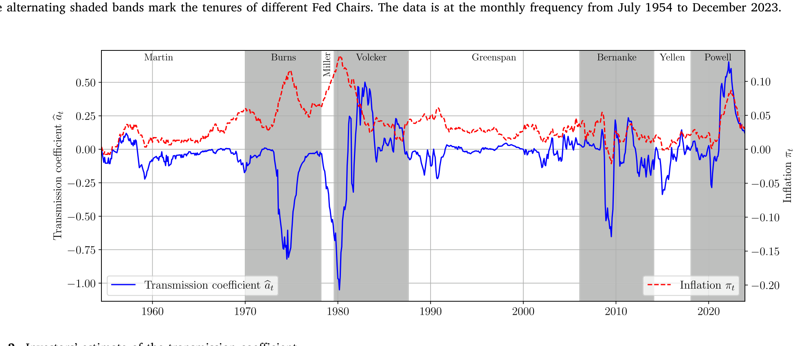
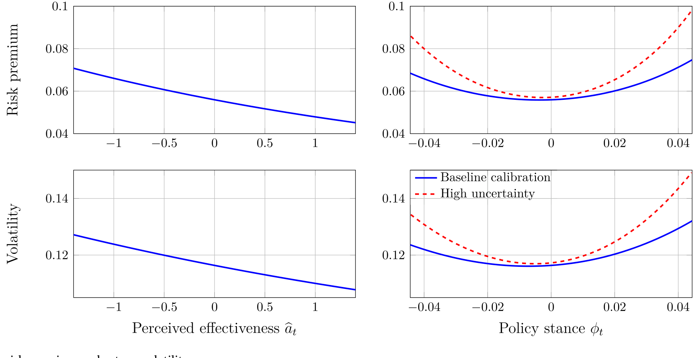
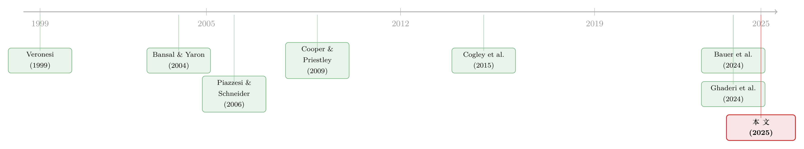

加息到底有没有用？——当「央行可信度」变成股票市场的风险因子
本文读的是 Andrei & Hasler (2025, JFE)：当投资者并不确切知道「加息到底压不压得住通胀」，而只能从一次次通胀意外里去倒推货币政策的传导效率时，这种「猜测」本身就成了一种被定价的风险。模型给出一个干净的结论——政策越偏离中性，风险溢价与波动率越高，呈现一条以「中性利率」为底的 U 形曲线。于是央行的可信度，第一次以一种可测量的方式，变成了股票市场上一个真实的风险因子。
1 引言：一句让人不安的大实话
先讲一个看似与资产定价无关、却让所有宏观学家都沉默的事实。2022 年，Cochrane 在《华尔街日报》上写下一句话作标题："Nobody knows how interest rates affect inflation."（没人知道利率究竟如何影响通胀。）
这不是耸人听闻。我们当然知道央行「加息是为了压通胀」，但加息到底能把通胀压下去多少、要多久、会不会反而把通胀顶上去——这个传导链条的强度，连央行自己都说不清。Cochrane (2024) 干脆把它当成一个公开的未解之谜来讨论。
接着，一个自然的问题是：如果连美联储都不确定自己的工具有多大威力，那么坐在屏幕另一端、靠观察通胀和利率数据吃饭的投资者，又该怎么办？
他们只能猜。每出来一个通胀数据，他们就在心里默默修正一次：「看来这次加息没那么管用」或者「这次央行确实把通胀摁住了」。本文最核心、也最漂亮的一步在于：它指出，这种对货币政策传导效率的学习（learning）过程本身，就是一种风险来源——而且是会被股票市场定价的风险。
于是反转出现了：通常我们以为风险来自「政策会怎么动」，本文却说，真正的风险来自「政策动了之后，到底有没有用，而我们并不知道」。把这件事写进一个均衡资产定价模型，就得到了一个反直觉却极其干净的预言——货币政策在它的两个极端（极度宽松或极度紧缩）时最危险。
2 一个会「学习」的投资者：经济环境
要把上面的故事讲成数学，作者搭了一个连续时间、无限期、代表性投资者的禀赋经济。他们刻意没有去建一个完整的新凯恩斯（New-Keynesian）模型，而是用一个化约式 (reduced-form) 的「货币区块（monetary block）」直接给出几条状态变量的随机过程，再把它接到资产定价上。这样做的好处是：把投资者学习的效应单独隔离出来，同时保持模型可解。
货币区块里有三个外生状态变量：产出缺口 (output gap) \(y_t\)、通胀 (inflation) \(\pi_t\)，以及一个隐藏的传导系数 (transmission coefficient) \(a_t\)。名义利率 \(r_{N,t}\) 则由一条泰勒规则 (Taylor rule) 内生决定。
产出缺口是一个均值回复过程：
$$dy_t = -\lambda_y y_t\,dt + \sigma_y\,dB_{y,t}$$
之所以把产出缺口放进来，是因为它本身就是一个被验证过的资产定价预测变量（Cooper and Priestley, 2009）。
名义利率服从泰勒规则，对通胀和产出缺口做反应（Taylor, 1993）：
$$r_{N,t} = \bar r_N + \beta_\pi(\pi_t - \bar\pi) + \beta_y y_t$$
作者由此定义政策立场 (policy stance) ——名义利率相对其中性水平 \(\bar r_N\) 的缺口：
$$\phi_t := r_{N,t} - \bar r_N$$
\(\phi_t>0\) 是紧缩，\(\phi_t<0\) 是宽松，\(\phi_t=0\) 是中性。请记住这个 \(\phi_t\)，它是整篇文章的主角。
然后是关键的一笔：通胀向一个随政策移动的长期锚回归。把锚的表达式代进来，通胀过程写成
$$d\pi_t = \lambda_\pi\big[(\bar\pi - a_t\phi_t) - \pi_t\big]\,dt + \sigma_\pi\,dB_{\pi,t}$$
这里 \(\bar\pi\) 是央行的目标，而 \(a_t\phi_t\) 这一项才是灵魂：\(a_t\) 衡量政策立场 \(\phi_t\) 把通胀锚拉动多少。\(|a_t|\) 大，意味着政策传导有力；\(|a_t|\) 小，意味着政策几乎推不动通胀。更微妙的是，\(a_t\) 还可以是负的——那意味着「反生产」效应：你紧缩（\(\phi_t>0\)）反而把通胀锚顶得更高。
最后，传导系数自己也是一个均值回复的随机过程：
$$da_t = -\lambda_a a_t\,dt + \sigma_a\,dB_{a,t}$$
整个模型的中心假设只有一句话：\(a_t\) 是不可观测的。投资者完全理解上面这套结构，却永远看不到 \(a_t\) 的真实取值。他只能从已实现的通胀与名义利率的历史 \(\{\pi_s, r_{N,s}\}_{s\le t}\) 里去推断它。
3 学习的核心：那条信念更新方程
既然 \(a_t\) 看不见，投资者就用卡尔曼–布西滤波 (Kalman–Bucy filter) 去估计它。记后验均值 \(\hat a_t = \mathbb{E}[a_t\mid\mathcal{F}_t]\) 为投资者感知到的传导效率，后验方差 \(\nu_{a,t}\) 为这个信念的不确定度——作者称之为传导不确定性 (monetary-transmission uncertainty)。
在线性高斯设定下，滤波给出信念的演化方程。这是全文最该一步步看清楚的一条：
其中通胀意外被定义为
$$d\hat B_{\pi,t} := dB_{\pi,t} + \frac{\lambda_\pi}{\sigma_\pi}(\hat a_t - a_t)\phi_t\,dt$$
而不确定性 \(\nu_{a,t}\) 自己服从一个确定性的 Riccati 方程：
$$d\nu_{a,t} = \left[\sigma_a^2 - 2\lambda_a\nu_{a,t} - \left(\frac{\phi_t\lambda_\pi\nu_{a,t}}{\sigma_\pi}\right)^2\right]dt$$
这条信念方程里藏着两个让人拍案的性质。
第一，学习是「不对称」的。 看那个学习增益 \(\dfrac{\phi_t\lambda_\pi\nu_{a,t}}{\sigma_\pi}\) 前面的负号，再乘上 \(\phi_t\) 的正负：当政策紧缩（\(\phi_t>0\)）时，一个正的通胀意外（\(d\hat B_{\pi,t}>0\)，通胀比预期更高）会压低 \(\hat a_t\)——「我都加息了通胀还往上冒，看来加息没用」；而当政策宽松（\(\phi_t<0\)）时，同样一个正的通胀意外却会抬高 \(\hat a_t\)。同一条通胀新闻，在紧缩期和宽松期被读成了相反的含义。这一点恰好对上了 Bauer et al. (2024) 的经验发现：市场对货币政策的感知，确实随政策周期系统性地变化，紧缩和宽松阶段对同一动作的解读不同。
第二，学习在中性附近会「停摆」。 学习增益正比于 \(\phi_t\nu_{a,t}\)。当政策接近中性（\(\phi_t\to 0\)），无论通胀怎么意外，投资者都几乎学不到任何关于 \(a_t\) 的东西——因为政策没动，你根本无从判断它的传导力有多强。只有当政策远离中性、且不确定性 \(\nu_{a,t}\) 又高时，信念才会对消息剧烈反应。学习本身在政策的极端处被放大。
把这两条放在一起，U 形的种子就已经埋下了。
4 风险如何被定价：U 形与「坏消息」通道
接着要把「学习」翻译成「风险溢价」。投资者持有 Kreps–Porteus / Epstein–Zin (Epstein and Zin, 1989) 偏好，主观贴现率 \(\rho\)、相对风险厌恶 \(\gamma\)、跨期替代弹性 \(\psi\)，且需要 \(\gamma>1/\psi\)（偏好不确定性的早期解决）与 \(\psi>1\) 来产生长期风险效应（Bansal and Yaron, 2004）。沿着 Duffie and Epstein (1992) 的随机微分效用，能写出状态价格密度 \(\xi_t\) 与各风险的市场价格 \(m_t\)。
这里最关键的，是通胀风险的市场价格：
$$m_{\pi,t} = (1-\theta)\left(\sigma_\pi I_\pi - \frac{\lambda_\pi\nu_{a,t}\phi_t}{\sigma_\pi}I_{\hat a}\right)$$
其中 \(I_z\) 是对数财富–消费比对状态变量 \(z\) 的偏导。这个式子值得逐项品。
首先，通胀为什么有价格？因为正的通胀意外预示着更低的未来消费增长——这正是 Piazzesi and Schneider (2006) 的「坏消息（bad news）」通道：意外通胀推高边际效用，所以 \(m_{\pi,t}<0\)，对冲通胀的资产提供保险、赚负溢价，而在通胀意外上涨时表现糟糕的资产则是风险资产、要正补偿。
但真正关键的一步在于括号里的第二项 \(-\dfrac{\lambda_\pi\nu_{a,t}\phi_t}{\sigma_\pi}I_{\hat a}\)——这就是学习的贡献。它告诉我们，学习从两条路放大了通胀风险的定价：
- 持久性放大：当投资者认为传导很弱（\(\hat a_t\) 低），通胀显得更「黏」、更持久，长期风险上升，「坏消息」通道被加强；
- 敏感性放大：随着政策远离中性（\(|\phi_t|\) 变大），上面那一项的绝对值随 \(\phi_t\) 上升，学习使投资者的信念对通胀新闻更敏感，于是学习自己变成了一个风险源。
把这些组合起来，作者得到三条核心预言（Table 2 用导数符号把它们系统地列了出来）：
- 波动率和股权风险溢价都随政策立场的绝对大小呈 U 形——无论极度宽松还是极度紧缩，风险都更高，底部在中性利率处；
- 感知传导越弱（\(\hat a_t\) 越低），波动率与风险溢价越高；
- 传导不确定性 \(\nu_{a,t}\) 越高，波动率与风险溢价进一步上升。
三条合在一起，导出本文那句最有分量的话：央行可信度本身，就是一个被定价的风险因子。 当可信度动摇（\(\hat a_t\) 下降、\(\nu_{a,t}\) 上升），市场就更动荡——尤其在政策远离中性的时候。
（关于「贴现率/风险溢价才是资产定价的中心议题」这一更大的图景，可参见《贴现率：资产定价的中心议题》；而关于货币政策如何经由贴现率通道传导到资产价格，则可对照《同一只股票，两个价格：用「A/H 比价」给货币政策的贴现率通道称重》。）
5 数据与估计：不用资产价格，却对上了资产价格
讲到这里，最容易被怀疑的是：这么多看不见的状态变量，凭什么相信它？作者的回答相当硬气。
他们用极大似然 (maximum likelihood) 估计模型参数，数据是 1954 至 2023 年的美国宏观序列——真实 GDP、联邦基金利率、通胀、产出缺口（见图 1）。注意：估计过程完全没有用到任何资产价格数据。

Figure 1: GDP growth, output gap, inflation, and federal funds rate
然而，仅凭宏观数据估出来的模型，却把一系列资产定价矩拟合得相当漂亮：平均实际利率约 1%、平均名义利率 4.4%、市场风险溢价 5.7%、收益波动率 11.8%。这是一种近乎样本外 (out-of-sample) 的检验——你没拿股票收益去喂模型，模型却自己长出了对的股票溢价。
估计还顺带确认了一个对机制至关重要的细节：泰勒规则里 \(\beta_\pi<1\)（见 Section 3, Table 3）。也就是说，央行对通胀只做部分抵消，通胀上升时实际利率反而下降——这正是「坏消息」通道得以成立的微观基础。
把估计出来的模型沿历史回放，就能看到投资者对传导系数 \(\hat a_t\) 的估计如何随时间起伏（图 2）。在通胀失控、央行手忙脚乱的年代，感知传导效率明显走低；而在通胀被驯服、政策可信度高的时期，\(\hat a_t\) 回升。这条曲线，就是「央行可信度」被量化后的样子。

Figure 2: Investors’ estimate of the transmission coefficient
6 主要结果：把 U 形量出来
模型预言是 U 形，数据答应吗？
作者用模型隐含产出、资产市场数据和模型无关 (model-free) 的代理变量，构造了股权风险溢价、收益波动率、价格–股息比、实际利率、预期产出增长等时间序列，再去检验它们如何随通胀、产出缺口、感知传导效率和政策立场变化。结论是：在模型里和在数据里，股权风险溢价和收益波动率都随感知传导效率 \(\hat a_t\) 下降、随政策立场的平方 \(\phi_t^2\) 上升，与 U 形预言一致；作者强调这些效应「在经济意义上可观、在统计上显著」。
更进一步的预测性回归 (predictive regression) 显示：感知传导效率与政策立场的平方，能够预测未来的超额收益。模型隐含的风险溢价与波动率随政策立场画出来，就是图 5 里那两条以中性为底、向两端翘起的 U 形。

Figure 5: Market risk premium and return volatility
数据里还藏着一个对机制的直接印证：在紧缩政策下，市场对通胀意外的反应是不对称的——和第 3 节那条信念方程预言的方向完全吻合。换句话说，不是模型先验地假设了不对称，而是不对称从数据里被独立地读了出来。
（顺带一提，把「政策新闻」拆解成股市波动的来源，是另一条平行的经验研究路线，参见《报纸是怎么「数」出股市恐慌的：把波动拆成四十个抽屉》。）
7 文献脉络
把这篇文章放回它的家谱里，会看得更清楚。
最早的一支，是学习与过度反应的理性预期资产定价：Veronesi (1999) 证明，当投资者对隐藏状态学习时，市场会在「好时光里对坏消息过度反应」。这奠定了「学习本身制造风险」的基调。
接着，长期风险 (long-run risk) 框架由 Bansal and Yaron (2004) 立起：消费增长里那一点点持久成分，配上 Epstein–Zin 偏好，就能撬动巨大的风险溢价。本文正是站在这块地基上——它把「通胀的持久性」变成了那个被定价的长期风险源。

然后，是通胀与货币政策的资产定价这一支：Piazzesi and Schneider (2006) 给出「坏消息」通道——意外通胀预示更低消费增长，是本文定价通胀风险的直接依据；Cooper and Priestley (2009) 则把产出缺口立为风险溢价的预测器，解释了为何模型要把 \(y_t\) 收进状态向量。
但真正与本文血缘最近的，是关于货币政策的学习这条新线。Cogley et al. (2015) 在最优泰勒规则的语境里指出，当agents逐步推断央行的反应函数参数时，学习会放大通胀的持久性——本文的「持久性通道」正是它的回声，只不过把落点从政策设计搬到了资产定价。而 Bauer et al. (2024) 用经验证据表明，市场对货币政策的感知随政策周期系统性演变，为本文的不对称学习提供了现实背书。最后，Ghaderi et al. (2024) 发现投资者偏好温和通胀、把过高和过低的通胀都视为风险——这与本文的 U 形资产定价含义不谋而合。
本文所处的位置，于是清晰了：它是第一个把「投资者对货币政策传导效率的学习」内生地写进均衡资产定价、并把央行可信度变成一个可估计、可定价的风险因子的工作。
8 评论与延伸（Q&A + 研究方向）
(a) 几个可能的疑问
Q：这跟我们常说的「货币政策不确定性」(monetary policy uncertainty) 是一回事吗？
不是。常见的政策不确定性问的是「下一步加不加息、加多少」——关于政策动作的不确定。本文的不确定是更深一层的结构参数不确定：政策动了之后，到底有没有用（传导效率 \(a_t\)）。前者是关于路径，后者是关于因果强度，而后者恰恰连央行自己都不知道。
Q：为什么是 U 形，而不是「越紧缩越危险」这种单调关系？
因为风险来自学习，而学习增益正比于 \(\phi_t\nu_{a,t}\)，定价里又出现 \(\phi_t^2\) 这样的二次项。政策在中性附近时（\(\phi_t\to0\)）几乎学不到东西、学习风险趋于零；只有政策向两端走（无论宽松还是紧缩），信念才剧烈波动。所以底在中性、两端翘起，自然是 U 形而非单调。
Q：估计根本没用资产价格，凭什么说模型「匹配」了资产价格？
这恰恰是它最有说服力的地方。参数只由宏观数据（GDP、利率、通胀、产出缺口）经极大似然估出，资产定价矩（风险溢价 5.7%、波动率 11.8% 等）是模型事后吐出来的，没被用于拟合。这是一种近乎样本外的检验，比「把目标矩塞进去再夸自己拟合得好」可信得多。
Q：「坏消息」通道凭什么成立？
靠两个支点。其一是 Piazzesi and Schneider (2006) 的机制——意外通胀预示更低的未来消费增长，从而推高边际效用；其二是估计出的 \(\beta_\pi<1\)，央行只部分抵消通胀，于是通胀上升时实际利率下降、储蓄被抑制，预期消费路径被压平。两者合起来给出 \(m_{\pi,t}<0\)。
Q：\(a_t\) 永远看不见，这个「学习」的识别可信吗？
这是我最大的保留。滤波在数学上当然给出一个后验，但 \(a_t\) 的信号完全来自通胀意外，而且只有在 \(\phi_t\neq0\) 时才有信息含量——政策中性时学习停摆。这意味着 \(\hat a_t\) 的辨识在样本里高度依赖那几段政策极端的时期（如沃尔克紧缩、疫情后加息），样本外的稳健性值得追问。
Q：负的传导系数 \(a_t\) 到底意味着什么？
意味着「反生产」：你紧缩（\(\phi_t>0\)）反而把通胀锚 \(\bar\pi - a_t\phi_t\) 顶得更高。这带着一点价格水平论 / 财政通胀的味道——加息提高了政府的利息支出和名义需求。本文不深究其宏观来源，只把它当作一种投资者会担心、并因此定价的可能性。
(b) 几个可能的研究问题与提案
1. 把「传导可信度风险」搬进公司债信用利差。
【经济故事】如果央行可信度（\(\hat a_t\)）下降会推高股权风险溢价，那它应当同样推高信用利差，且对低评级、长久期债券冲击更大——因为这些债券对「通胀更持久」的长期风险最敏感。
【可行性】中。数据用 TRACE 成交 + 评级 + Fed funds，把本文构造的 \(\hat a_t\)、\(\nu_{a,t}\)、\(\phi_t^2\) 作为右手变量做利差面板回归。难点是把模型隐含的状态变量干净地外推到债券样本，识别上需要控制宏观共动。
2. 外资持有人对央行可信度的异质反应。
【经济故事】当美联储可信度动摇时，外资与本土投资者对美元资产的「通胀保险」需求未必一致；外资可能更快减持，从而把可信度风险传导到资本流动与汇率。
【可行性】中低。数据可用 TIC 跨境持仓 + 国别基金流。难点在于把「可信度冲击」与一般的全球风险偏好冲击分离，需要事件研究或工具变量来识别。（与外资—信用市场这条线相关。）
3. 极端政策立场下的债券流动性 U 形。
【经济故事】本文是定价侧的 U 形；一个互补假说是数量/流动性侧也呈 U 形——政策远离中性时不确定性高，做市商风险限额收紧，公司债买卖价差和价格冲击在 \(|\phi_t|\) 大时恶化。
【可行性】中。用 TRACE 构造流动性度量，按政策立场分组检验非单调性。识别上要小心，因为极端政策期往往与系统性压力期重叠。
4. 用通胀期权直接测 \(m_{\pi,t}\) 的时变。
【经济故事】本文的核心定价对象是通胀风险的市场价格 \(m_{\pi,t}\)，而它预言 \(m_{\pi,t}\) 随 \(\hat a_t\)、\(\phi_t\) 系统变化。
【可行性】高。TIPS、通胀掉期及其期权能给出市场对通胀风险的定价，直接对照模型预言的 U 形与不对称，是一个相对干净、数据现成的验证。
评论与延伸：我的判断
这篇文章最大的贡献，是把一个长期停留在「宏观直觉」层面的命题——央行可信度很重要——变成了一个可估计、可定价、有明确比较静态的资产定价对象。它的优雅在于：只用宏观数据估参数，却让风险溢价和波动率从模型里自然涌出，并复现出一个此前没人系统刻画过的 U 形。把「学习本身是风险源」这条 Veronesi 以来的老线索，接到货币政策传导这个最当下的议题上，落点既新又稳。
我的保留集中在识别。\(a_t\) 永不可观测，\(\hat a_t\) 的全部信号来自通胀意外，而这信号又只在政策偏离中性时才存在。这意味着模型对传导效率的「学习」在很大程度上由少数几段极端政策时期驱动——它们恰恰也是系统性风险最高的时期。于是一个绕不开的担忧是：数据里那条漂亮的 U 形，究竟是「学习风险」的因果印记，还是「极端政策期 ≈ 危机期」这个共线性的副产品？本文用模型隐含矩与模型无关代理的双重检验来缓解，但没有一个外生冲击来彻底切断这层混淆。
后续我最想看到的，是一个准自然实验式的补强：找到政策立场极端、但系统性风险并不特别高的窗口（或反之），看 U 形是否依然成立；以及把这套框架推到信用市场与跨境持仓上，检验「央行可信度风险」是否是一个真正跨资产、跨投资者群体都被定价的因子。如果是，那这篇文章打开的，就不止是一个股票市场的故事。
参考文献
Andrei, D., Hasler, M. (2025). Investor learning about monetary-policy transmission and the stock market. Journal of Financial Economics 173, 104154.
Bansal, R., Yaron, A. (2004). Risks for the long run: a potential resolution of asset pricing puzzles. Journal of Finance 59(4), 1481–1509.
Bauer, M.D., Pflueger, C.E., Sunderam, A. (2024). Perceptions about monetary policy. Quarterly Journal of Economics 139(4), 2227–2278.
Cochrane, J.H. (2022). Nobody knows how interest rates affect inflation. Wall Street Journal A.15.
Cochrane, J.H. (2024). Expectations and the neutrality of interest rates. Review of Economic Dynamics 53, 194–223.
Cogley, T., Matthes, C., Sbordone, A.M. (2015). Optimized Taylor rules for disinflation when agents are learning. Journal of Monetary Economics 72, 131–147.
Cooper, I., Priestley, R. (2009). Time-varying risk premiums and the output gap. Review of Financial Studies 22(7), 2801–2833.
Duffie, D., Epstein, L.G. (1992). Asset pricing with stochastic differential utility. Review of Financial Studies 5(3), 411–436.
Epstein, L.G., Zin, S.E. (1989). Substitution, risk aversion, and the temporal behavior of consumption and asset returns: a theoretical framework. Econometrica 57(4), 937–969.
Ghaderi, M., Seo, S.B., Shaliastovich, I. (2024). Learning, subjective beliefs, and time-varying preferences for different inflation ranges. SSRN working paper.
Piazzesi, M., Schneider, M. (2006). Equilibrium yield curves. NBER Macroeconomics Annual 2006 21, 389–472.
Taylor, J.B. (1993). Discretion versus policy rules in practice. Carnegie-Rochester Conference Series on Public Policy 39, 195–214.
Veronesi, P. (1999). Stock market overreaction to bad news in good times: a rational expectations equilibrium model. Review of Financial Studies 12(5), 975–1007.